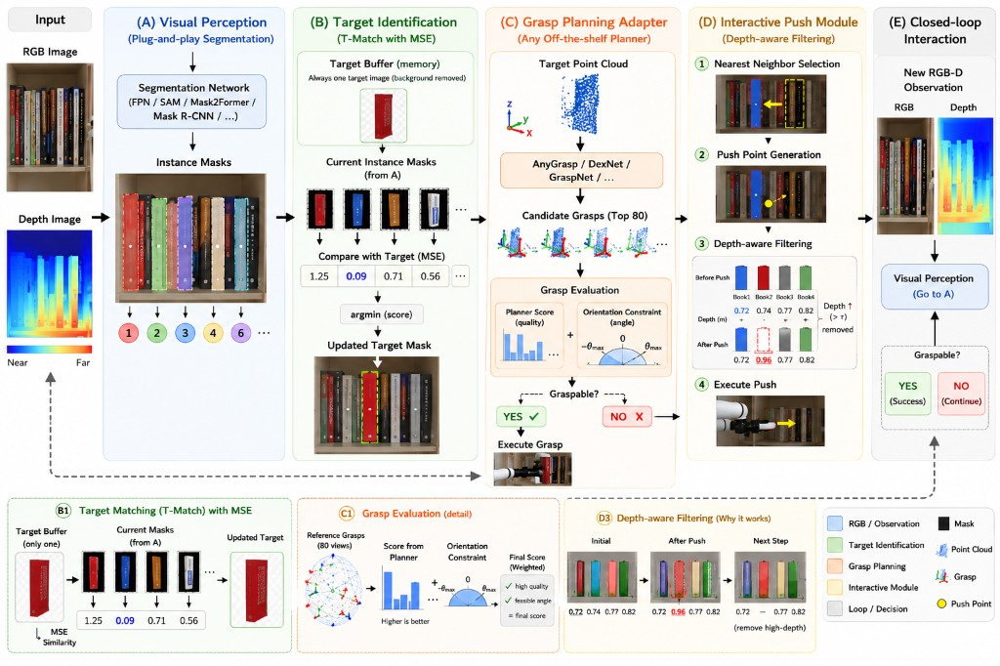

IEEE-CYBER 2024 · Finalist, Best Poster Award · Copenhagen
An Adapter for Interactive Object Retrieval on the Shelf
Hang Li, Peixing You, Guokang Wang, Bin Fang,
Jianqin Yin, Huaping Liu, Di Guo
Dense books on a working deck leave no wrap-grasp envelope. The adapter locks a target with
T-Match, queries an off-the-shelf grasp planner, and otherwise pushes a depth-filtered
neighbor into the shelf until the target is graspable.
4×
Front demo: one-take MuJoCo retrieval across four looks (library, office, warehouse, gallery),
encoded at 4×. Perception PiP marks the working-row target and push point;
the arm orbits 180° while pushing then lifting.
Abstract
Retrieving a designated book from a crowded shelf is not a single-shot grasp. Neighbors close
the wrap envelope, so a planner that is competent in free space still returns no feasible
grasp. We implement the paper’s adapter as a closed loop over RGB-D: instance masks, a
persistent target identity (T-Match), a grasp planner Grsp(·) on the target cloud,
constrained approach evaluation, and a depth-filtered push that opens space beside the target
rather than cycling the same object.
The MuJoCo environment is a floor-standing bookcase. Only the bottom deck is interactive;
upper decks are static fill. A dedicated eye camera and a 2D projection filter keep perception
on that working row, which is what the front demo’s PiP shows.
Full pipeline
One interaction is one pass around this loop. Grasp succeeds only after the working row has
been opened; otherwise the push branch runs and the loop repeats.

Paper pipeline. (A) Plug-and-play instance segmentation. (B) T-Match with MSE against a
target buffer. (C) Any off-the-shelf grasp planner plus orientation constraints. (D)
Depth-aware push of the nearest neighbor. (E) Re-observe until the target is graspable.
01
RGB-D observe
Eye camera on the working deck. Depth + pinhole intrinsics for backprojection.
02
Segment
Detectron2 Mask R-CNN FPN (demo) or color heuristic. Keep masks that overlap interactive books.
03
T-Match
Lock the red designated spine once; later steps MSE-match mask + appearance crop.
Quality score plus geodesic proximity to shelf-axis default approaches.
06
Push or lift
If not graspable: nearest neighbor, depth filter, inward + lateral shove. Else wrap-grasp.
Implementation
Package interactive_grasping (src layout). The adapter is backend-agnostic;
MuJoCo is the visual environment used on this page.
adapter.py
InteractiveObjectRetrievalAdapter.run_once is the closed loop. Observation
→ segment → optional working-row filter → T-Match → cloud → planner → constrained
score. A passing grasp calls execute_grasp; otherwise
DepthFilteredPushStrategy emits a PushAction.
target_match.py
First frame: nearest mean RGB to the designated red spine. Later frames: min MSE vs a
buffer of target masks, plus weighted MSE of a 32×16 spine crop so identity survives
after neighbors move.
push_strategy.py
Nearest 2D centroid to the target, excluding the target. Depth filter drops objects that
receded from the last push (already in the shelf). Contact point is the mask centroid
backprojected to world; direction is inward (−Y) plus a lateral component away from the target.
grasp_evaluation.py
Sample default orientations about the shelf width axis (±45°, 80 samples). Score
1 − dgeo/π. Candidates below
constrained_score_threshold are treated as not yet graspable.
mujoco_env.py
UR5-style 6-DoF + parallel jaw, Jacobian IK. Floor-standing case; working deck at
0.162 m. Interactive books are free-jointed; deco books are welded. Eye camera hides
the robot (geom group 3). Demo camera orbits 180° around the arm.
Perception backends
Detectron2FpnSegmentationBackend uses COCO Mask R-CNN R50-FPN, filtered to
class book, then NMS. Heuristic color blobs exist for tests. Grasp planner
default is heuristic; AnygraspBackend takes a planner_fn hook.
obs = env.get_observation()
parts = segment(obs.rgb) # Detectron2 or heuristic
parts = env.filter_interaction_masks(obs, parts)
k = tmatch.select_and_update(parts, rgb=obs.rgb)
cloud = mask_to_point_cloud(obs, parts[k].mask)
cands = planner.plan(cloud, parts[k].mask)
grasp = select_best_constrained(cands)
if grasp:
env.execute_grasp(grasp.pose)
else:
env.push(push_strategy.compute_push_action(...))
Experiments
Suites live in scripts/run_experiments.py. Numbers below are from that script
on the MuJoCo bookcase with heuristic segmentation (so the table is reproducible without a
GPU). The hero video uses Detectron2. Grasp is admitted only after three opening pushes.
Loading experiment JSON…
Scene generalization
Same adapter, four named looks, 12 interactive books, six seeds each.
Crowd density
Library look. Success should hold as the working row fills, at the cost of the required opening pushes.
Ablations
no_push is the load-bearing ablation: without opening the row, wrap grasp is
refused (0% here). no_tmatch and no_mask_filter still succeed
under heuristic blobs because the simulator grasps the nearest interactive book. Those two
knobs matter for Detectron2 PiP identity (hero demo), not for heuristic success rate.
Adapter loop (toy)
Physics-free RGB rectangles, 20 seeds. Checks that the paper loop itself, not MuJoCo contact, is what needs the pushes.
Award
Presented at the 14th IEEE International Conference on CYBER Technology in Automation,
Control, and Intelligent Systems (IEEE-CYBER 2024), 16–19 July 2024, Copenhagen.